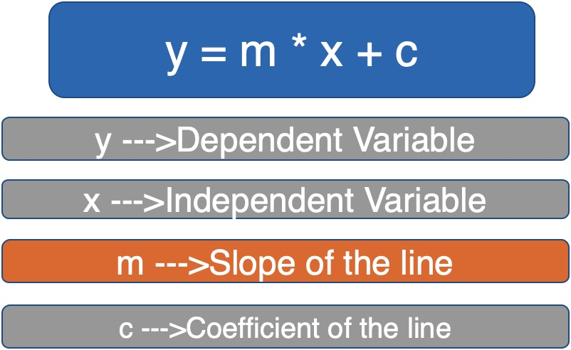
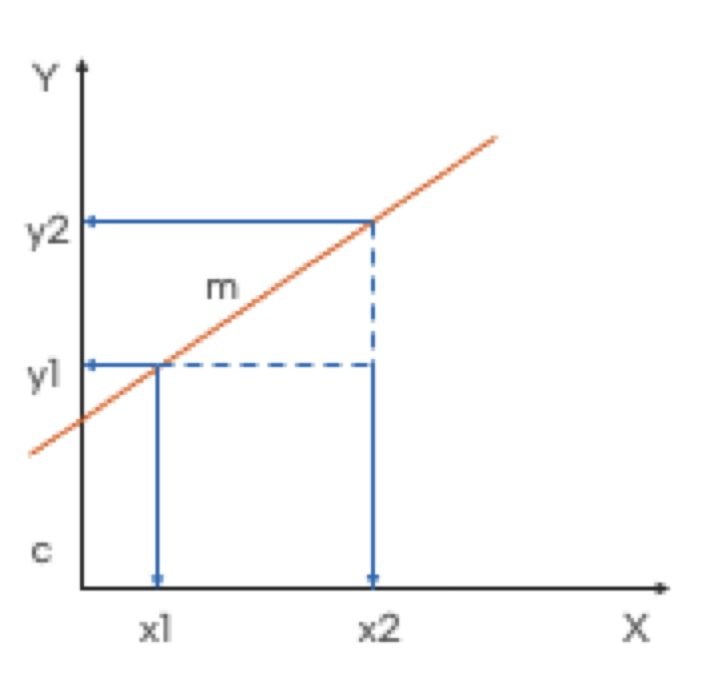
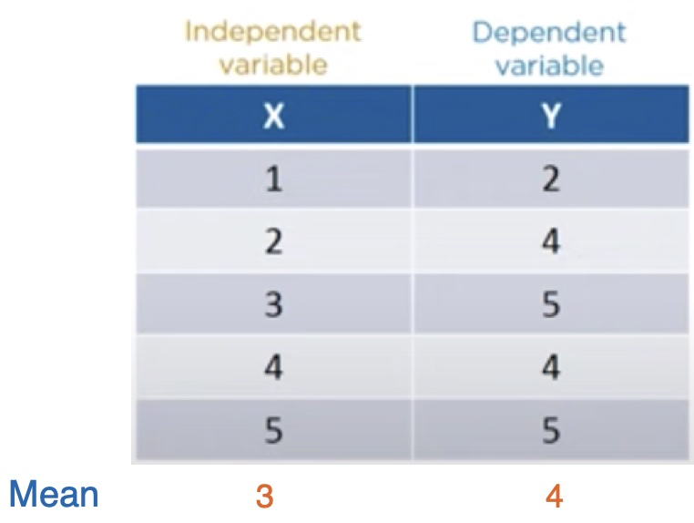
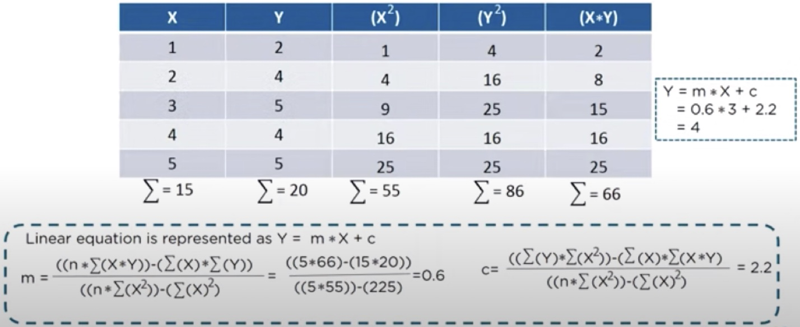
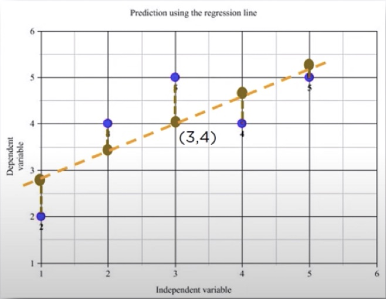

Lesson 11 - How Linear Regression algorithm works?
At the end of this lesson, you will be able to:
- Explain how Regression Equation works.
- Draw the equation of the Regression Line and explain what residuals are.
Regression Equation
The simplest form of a simple linear equation with one dependent and one independent variable is represented by:
 |
 |
Intuition behind the Regression line
Lets consider a sample dataset with 5 rows and find out how to draw the regression line.

Calculating m and c for y = m*x + c

Let us find out the predicted value of Y(Ypred) for the corresponding value of X using the linear equation
where m = 0.6 and c = 2.2 from Fig 9.20.
| x | Ypred |
| 1 | 0.6 * 1 + 2.2 = 2.8 |
| 2 | 0.6 * 2 + 2.2 = 3.4 |
| 3 | 0.6 * 3+ 2.2 = 4 |
| 4 | 0.6 * 4 + 2.2 = 4.6 |
| 5 | 0.6 * 5 + 2.2 = 5.2 |
The graph of the Regression Line
Residual or errors:
The distance between the actual and predicted values are known as residual or errors.
Blue points represent the actual Y values.
Brown points represent the predicted Y values.
Residual or errors = (Y – Ypred)
